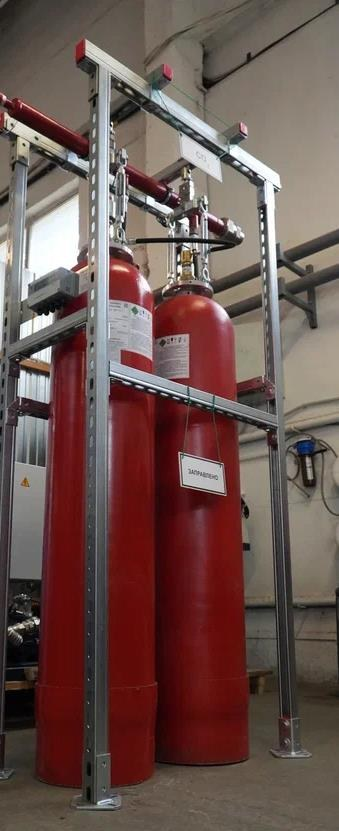
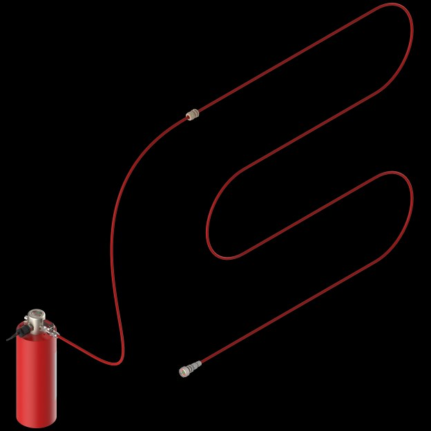
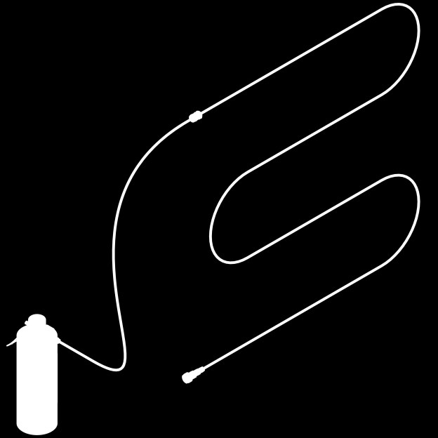
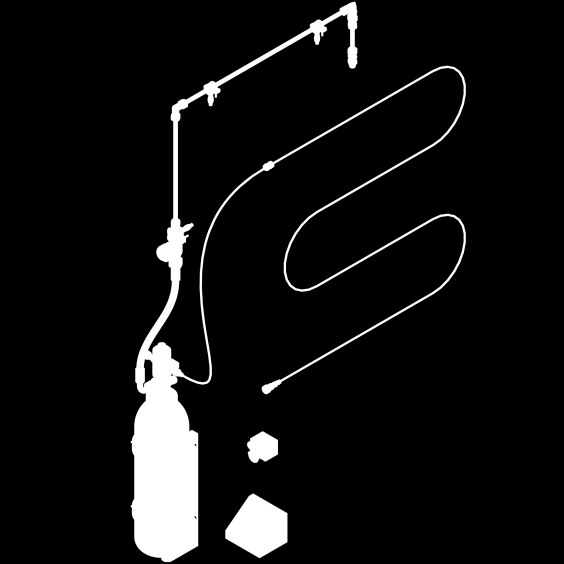

Хладон 227еа
Для УГП-Авт-П и УГП-Авт-К
Главная / Оборудование / УГП-Авт
Автоматическая установка пожаротушения, которая работает независимо от внешних источников питания и систем управления и передаёт сигнал о пожаре во внешние цепи. Обнаружение — тепловое, собственной сенсорной трубкой. Для защиты электрошкафов, станков, лабораторного и технологического оборудования.

Установки заполняются хладоном 227еа, фторкетоном ФК-5-1-12; для косвенного действия также двуокисью углерода
Для УГП-Авт-П и УГП-Авт-К

Для УГП-Авт-П и УГП-Авт-К
Для установок косвенного действия УГП-Авт-К
Два исполнения по способу подачи ГОТВ в защищаемый объём
Обозначение: УГП-Авт – П/К – Х/ФК – масса ГОТВ, кг


Основные параметры установок прямого действия УГП-Авт-П по руководству ПТДР.635165.036-П-Х/ФК РЭ
| Параметр | УГП-Авт-П-Х/ФК-1 | УГП-Авт-П-Х/ФК-2 |
|---|---|---|
| Объём защищаемого оборудования, м³, не более | 1,0 | 2,0 |
| Номинальная вместимость сосуда, л | 1 | 2 |
| Рабочее (максимальное) давление | 1,8 МПа (18,4 кгс/см²) | |
| Пробное давление | 2,7 МПа (27,5 кгс/см²) | |
| Масса ГОТВ, кг | 1 | 2 |
| Габариты сосуда (Ø × высота), мм | 89 × 290 | 89 × 505 |
| Масса сосуда с ВУ без ГОТВ, кг, не более | 2,0 | 2,7 |
| Длина сенсорной трубки в комплекте / макс., м | 4 / 10 | 6 / 16 |
| Диаметр условного прохода сенсорной трубки | 4 мм | |
| Температура срабатывания сенсорной трубки | 140 ± 10 °C | |
| Условия эксплуатации | от 0 °C до +50 °C | |
| Срок службы, лет, не менее | 20 | |
Состав установки и логика срабатывания по тепловому воздействию пожара
При пожаре тепло разрушает сенсорную трубку в зоне нагрева. Происходит автоматический пуск и подача ГОТВ в защищаемый объём. Для прямого действия — через отверстие в трубке; для косвенного — по выпускному трубопроводу через насадки.
Ликвидация пожаров подкласса А2 и класса В по ГОСТ 27331


По СП 486.1311500.2020 в ряде случаев вместо АУП допускается применение автономных установок пожаротушения — в том числе для электрощитов и электрошкафов объёмом от 0,03 м³.
Стандарт организации «Установки газового пожаротушения автономные УГП-Авт. Руководство по проектированию, монтажу и техническому обслуживанию». Разработан ООО «Пожарная Автоматика» совместно с ФГБУ ВНИИПО МЧС России.
ТР ЕАЭС 043/2017, ТР ТС 032/2013. Проектирование — с учётом СП 485.1311500.2020. Необходимость защиты — по СП 486.1311500.2020.
Проведены испытания установок прямого и косвенного действия по методике ВНИИПО. Подтверждены тушение модельных очагов и передача тревожного сигнала.
Укажите тип оборудования, объём шкафа/зоны и предпочтительное ГОТВ — подготовим спецификацию УГП-Авт.